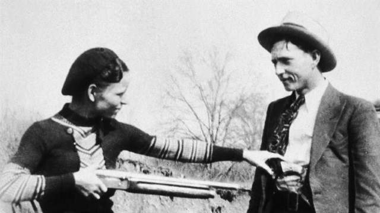
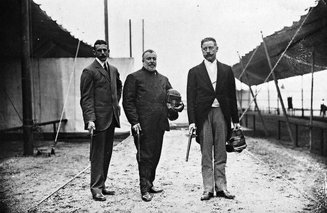
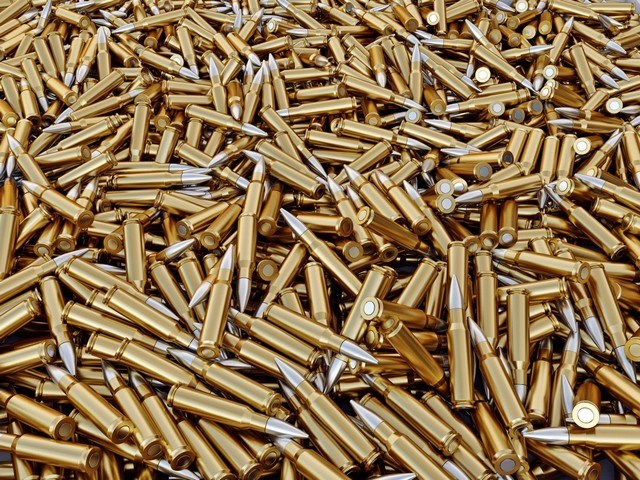
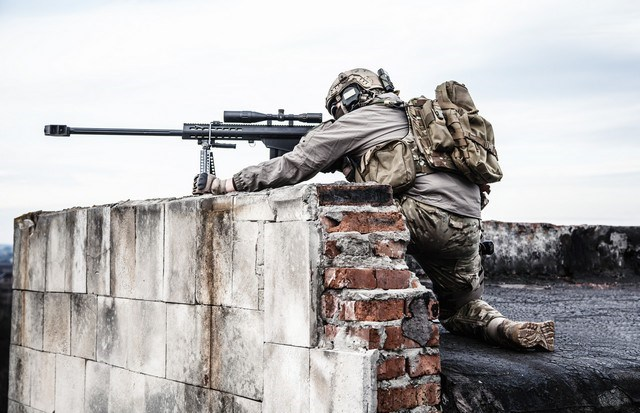
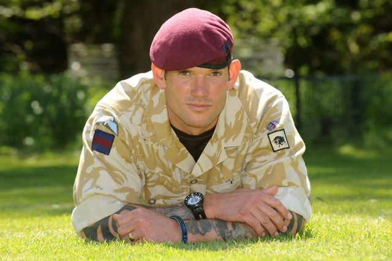
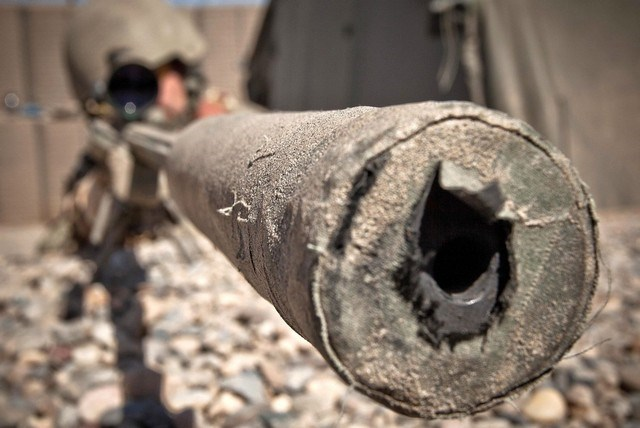
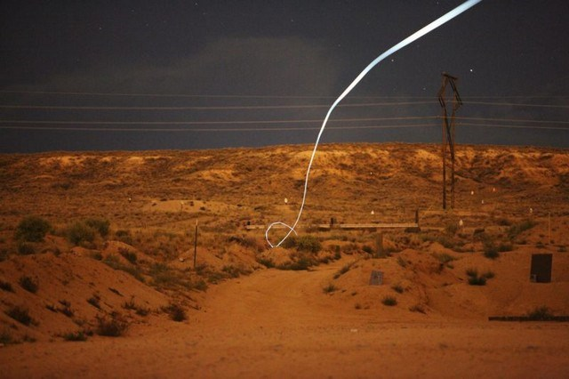
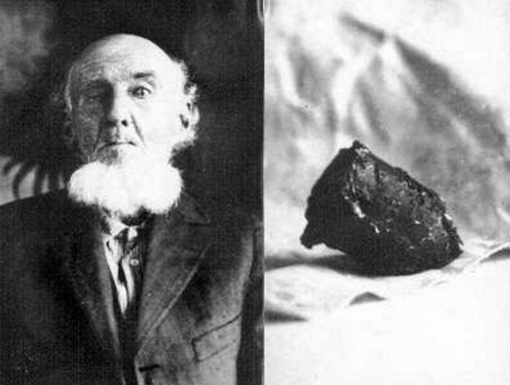
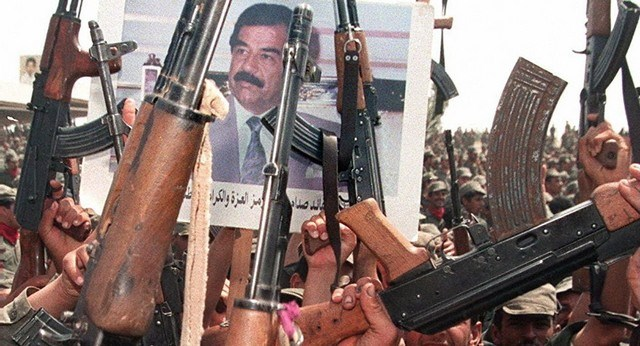
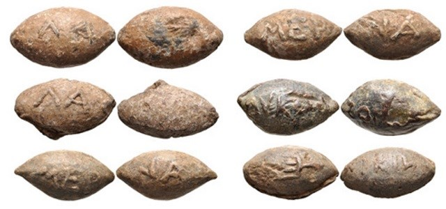

Algumas curiosidades sobre Armas de Fogo.
Dizem que Bonnie e Clyde - o casal de foras da lei mais famoso de todos os tempos - foram alvejados por tantas balas quando a polícia os capturou que foi quase impossível embalsamar seus cadáveres.

Nas Olimpíadas de 1908, o duelo foi uma das modalidades disputadas, e os competidores se enfrentavam usando roupas protetoras e disparando balas de cera com suas pistolas.

Só nos EUA, entre 10 e 12 bilhões de balas são vendidas anualmente. Os projéteis disparados pelos snipers percorrem distâncias tão grandes que os atiradores precisam levar em consideração o movimento da Terra antes de puxar o gatilho.


Falando em snipers, o soldado britânico Craig Harrison entrou para o Livro dos Recordes por disparar o tiro mais longo já registrado: 2.475 metros — e a bala levou 6 segundos para atingir o seu alvo!

Ainda sobre os snipers… Os disparos feitos por eles são supersônicos, o que significa que os alvos são atingidos antes de o barulho do tiro chegar aos seus ouvidos.
Em 2012, uma companhia chamada Sandia Labs criou projéteis “inteligentes” capazes de acertar alvos localizados a mais de 1,5 quilômetro de distância;

Durante a Guerra Civil dos EUA, um homem chamado W. V. Meadows levou um tiro no olho — quase 60 anos mais tarde, ele cuspiu a bala.

Durante as celebrações pela morte dos filhos do ditador iraquiano Saddam Hussein, mais de 20 pessoas teriam morrido por conta de balas perdidas disparadas pela população.

Arqueólogos descobriram projéteis de pedra usados por volta do ano 40 a.C. pelos antigos romanos — disparados por meio de armas de arremesso conhecidas como fundas — que continham mensagens (pra lá de sarcásticas) como “tome esta” e “ai! ”
